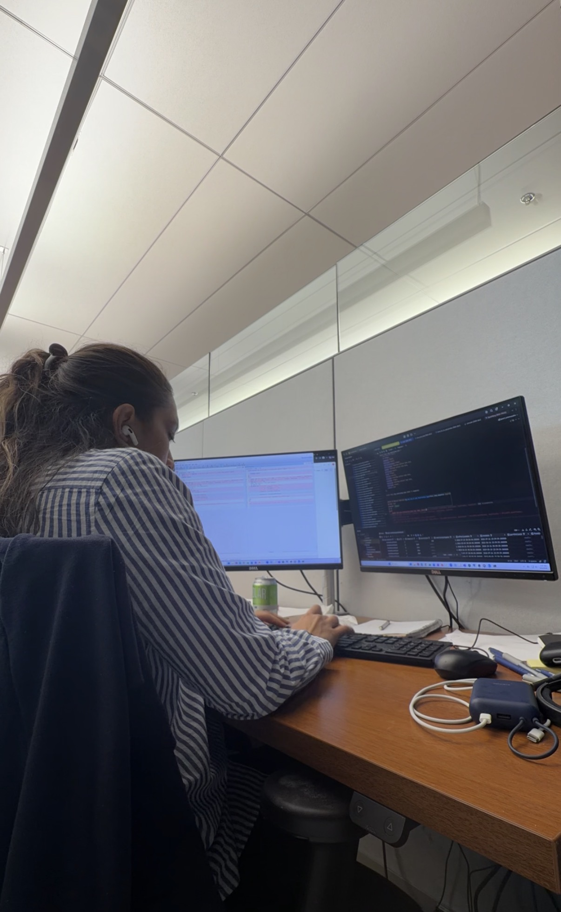
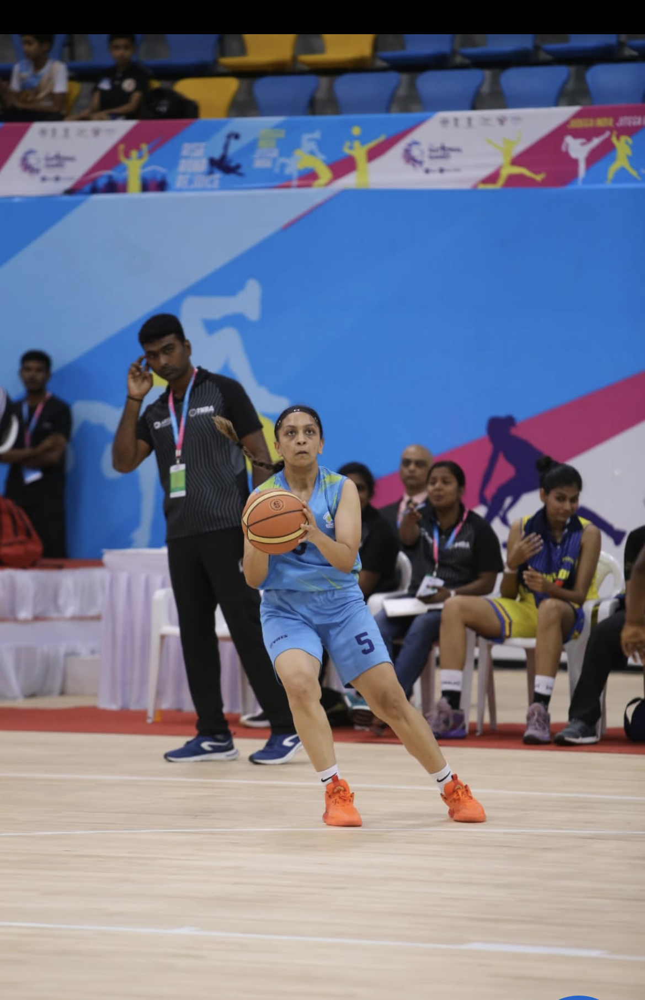

Hi, I'm Rajvi
I'm an MSCS student at Northeastern University, currently working as a Software Engineer Co-op at Bracebridge Capital, where I build data governance tools and automate financial reconciliation pipelines using C#, .NET, and Azure DevOps. I'm also the Head TA for Machine Learning & Data Mining 2, and I do research applying computer vision and machine learning to sports analytics - using player tracking data and video to study athlete performance.
Before any of that, I was on the court. I represented India at the U12 and U14 national levels, captained Madhya Pradesh's state basketball team, and trained at NBA Academy USA, where I won the Best Defender award. These days, that basketball background feeds directly into my research - I'm as interested in what the data says about a jump shot as I am in the shot itself.
Skills

- Python, R, SQL, C#, .NET
- PyTorch, TensorFlow, Scikit-Learn
- Computer Vision (MediaPipe, YOLO)
- Time Series & Bayesian Modeling
- AWS, Docker, Azure DevOps, CI/CD
- Tableau, Power BI, Matplotlib
Basketball background

- Student Manager, Northeastern Women's Basketball
- NBA Academy USA - Best Defender Award
- Top 14 All-Star Asia Selection
- India National Team - U12 & U14 levels
- Captain, Madhya Pradesh Women's State Team
Try it: interactive shot chart
Click anywhere on the court below to take a shot. Shots closer to the basket have a higher chance of going in, just like real shooting percentages by zone.